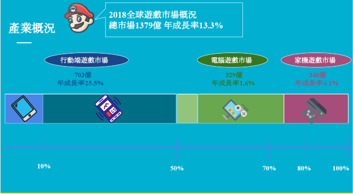
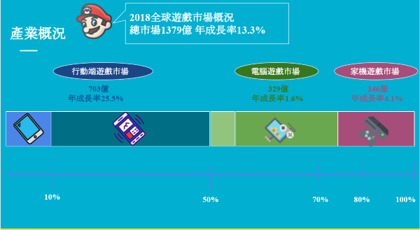

此行銷專案的目標為幫助蝦皮購物增加40~50歲年齡層顧客的市場占有率 ，與對此年齡層顧客的行銷溝通策略提案
蝦皮購物的主要客戶為20~40歲的年輕族群與青壯年族群。行銷溝通模式也主要以此族群偏好的時事、星座、男女話題為主。 近年來，銀髮、樂齡族群商機浮現，在電商市場上是尚未開發的客群。為了搶佔此塊市場，發展一系列的行銷策略。
本團隊先從目標客群的特性、消費習慣、未被滿足的需求著手調查，發現樂齡族群有幾項特點，第一是消費場地主要在傳統市場、賣場； 在購物習慣上，食品是最主要的購買商品，並且在兒女需要商品的消費力也很高；休閒活動的支出在非必要開銷中佔比最高。
因此在行銷策略上，我們提出在傳統市場上架設攤位，並提供試吃。有趣的是攤位接受購買，想購物須從蝦皮app上下單。 現場會有專人教學，完成訂單後服務人員會引導加入購物群組，群組內會有不定期的折扣、商品特價推播，有購物上的問題也可以直接在群組發問。
此提案可有效直接接觸目標客群，促使購物，並長期維持顧客關係。
 

針對遊戲產業目前的產業分工、未來趨勢、行銷案例進行深度剖析
遊戲產業的定義為運行在電子媒體上的互動遊戲，簡單可分類為家用主機遊戲、街上遊戲機、行動端遊戲三類
在手機成為人人享有的電子媒體後，手機遊戲迅速成為遊戲產業市占率、成長率最高的市場。遊戲廠商也紛紛將自家遊戲 製成手遊，搶佔手遊商機。最知名的案例為遊戲橘子公司在2017年推出的手機遊戲"天堂M"，喚醒許多玩家廢寢忘食練天堂的青春回憶，並推出一系列的行銷活動，以"把我的青春還給我" 作為行銷的主軸SLOGAN
針對國際學校人員流動率過高的問題進行分析、並給出管理辦法
由於國際學校的老師、學生家長往往來自世界各地，或出差國內外需要頻繁移動，學校的流動率、人口多樣性比起一般學校高尚許多。 也造成許多學生、教師管理上的問題、成本，教學品質也出現問題。
針對此點問題，可簡單分成移往國外而轉學跟非出國原因而轉學，並向下推演出一系列的問題原因。在經過與業主雙向訪談溝通數次後，發現非出國轉學根本原因為學校、家長、學生三者間資訊不流通、認知不一致 從而產生的教育問題。學校方標榜美式自由教育，注重學生自我管理、學習；然而台灣家長期待小孩有好的成績表現，更多師長管理。
因此本團隊設計了試讀期機制、與學生學習歷程地圖來讓學生、家長間的資訊更透明，家長也可以事前瞭解學校教育方式，決定是否就讀。